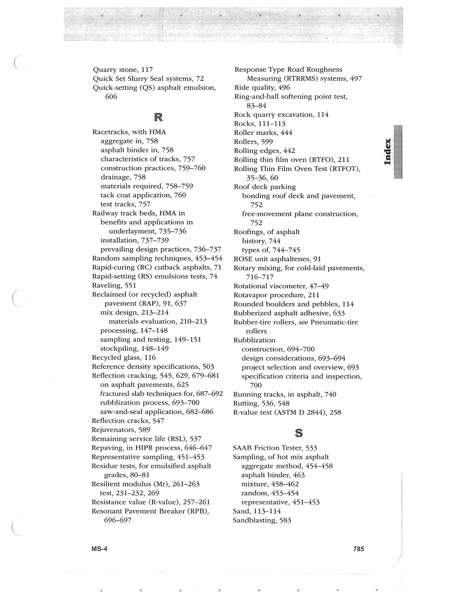

PDF page 819 · book page sequence 785


Searchable transcription
Unproofread OCR · 320 detected words; mean OCR confidence 94.49. Check technical values, symbols and table columns against the scan.
Quarry stone, 117
Quick Set Slurry Seal systems, 72
Quick-setting (QS) asphalt emulsion, 606
R
Racetracks, with HMA aggregate in, 758 asphalt binder in, 758 characteristics of tracks, 757 construction practices, 759-760 drainage, 758 materials required, 758-759 tack coat application, 760 test tracks, 757 Railway track beds, HMA in benefits and applications in underlayment, 735-736 installation, 737-739 prevailing design practices, 736-737 Random sampling techniques, 453-454 Rapid-curing (RC) cutback asphalts, 71 Rapid-setting (RS) emulsions tests, 74 Raveling, 551 Reclaimed (or recycled) asphalt pavement (RAP), 91, 637 mix design, 213—214 materials evaluation, 210-213 processing, 147-148 sampling and testing, 149-151 stockpiling, 148-149 Recycled glass, 116 Reference density specifications, 503 Reflection cracking, 545, 629, 679-681 on asphalt pavements, 625 fractured slab techniques for, 687-692 rubblization process, 693-700 saw-and-seal application, 682-686 Reflection cracks, 547 Rejuvenators, 589 Remaining service life (RSL), 537 Repaving, in HIPR process, 646-647 Representative sampling, 451-453 Residue tests, for emulsified asphalt grades, 80-81 Resilient modulus (Mr), 261-263 test, 231-232, 269 Resistance value (R-value), 257-261 Resonant Pavement Breaker (RPB), 696-697
MS-4
Response Type Road Roughness Measuring (RTRRMS) systems, 497 Ride quality, 496 Ring-and-ball softening point test, 83-84 Rock quarry excavation, 114 Rocks, 111-113 Roller marks, 444 Rollers, 599 Rolling edges, 442 Rolling thin film oven (RTFO), 211 Rolling Thin Film Oven Test (RTFOT), 35-36, 60 Roof deck parking bonding roof deck and pavement, 752 free-movement plane construction, 752 Roofings, of asphalt history, 744 types of, 744-745 ROSE unit asphaltenes, 91 Rotary mixing, for cold-laid pavements, 716-717 Rotational viscometer, 47~49 Rotavapor procedure, 211 Rounded boulders and pebbles, 114 Rubberized asphalt adhesive, 633 Rubber-tire rollers, see Pneumatic-tire rollers Rubblization construction, 694-700 design considerations, 693-694 project selection and overview, 693 specification criteria and inspection, 700 Running tracks, in asphalt, 740 Rutting, 536, 548 R-value test (ASTM D 2844), 258
S$
SAAB Friction Tester, 533 Sampling, of hot mix asphalt aggregate method, 454-458 asphalt binder, 463 mixture, 458-462 random, 453-454 representative, 451-453 Sand, 113-114 Sandblasting, 583
785